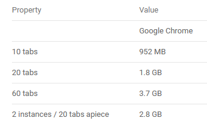

omdat de homepage de eerste pagina van een website is
HTML5
Versie 3
ze zijn anders gecodeerd en geprogammeerd bijvoorbeeld soms is contact informatie op een andere plek in een website en het ziet er ook anders uit
Google Chrome is het meest populairst
hier kun het hoeveelheid ram zien dat er wordt gebruikt per tab die je opent 10 tabs is zo,n 952MB dus 952:10=95,2MB per tab